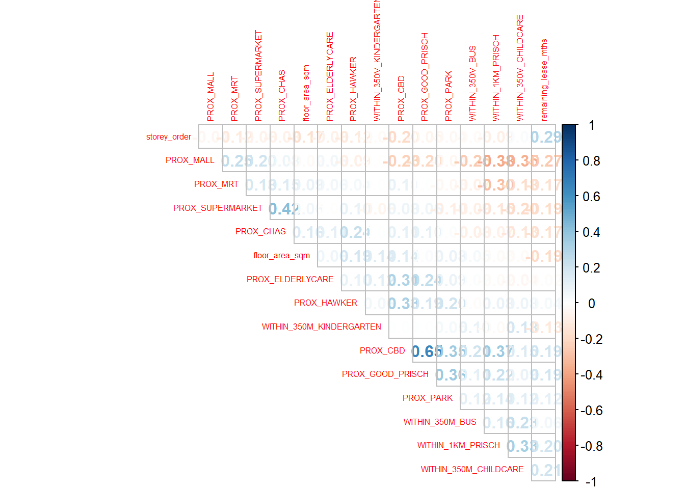
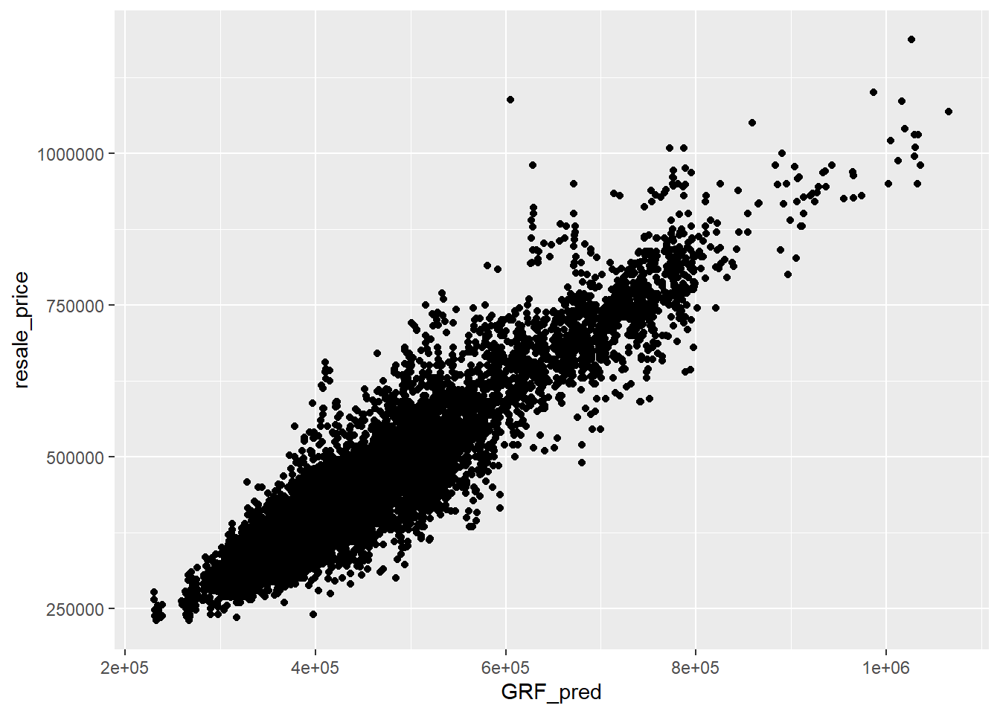

pacman::p_load(sf, spdep, GWmodel, SpatialML,
tmap, rsample, Metrics, tidyverse)Hands-on Exercise 8
Geographically Weighted Predictive Models
In this in-class exercise, we will learn how to build predictive model by using geographical random forest method. By the end of this hands-on exercise, we will acquire the skills of:
preparing training and test data sets by using appropriate data sampling methods,
calibrating predictive models by using both geospatial statistical learning and machine learning methods,
comparing and selecting the best model for predicting the future outcome,
predicting the future outcomes by using the best model calibrated.
Installing and Loading R packages
Reading data file to rds
mdata <- read_rds("data/model/mdata.rds")Data Sampling
set.seed(1234)
resale_split <- initial_split(mdata,
prop = 0.65/10,)
train_data <- training(resale_split)
test_data <- testing(resale_split)write_rds(train_data, "data/model/train_data.rds")
write_rds(test_data, "data/model/test_data.rds")Computing Correlation Matrix
mdata_nogeo <- mdata %>%
st_drop_geometry()
corrplot::corrplot(cor(mdata_nogeo[, 2:17]),
diag = FALSE,
order = "AOE",
tl.pos = "td",
tl.cex = 0.5,
method = "number",
type = "upper")
Observations
All the correlation values are < 0.8, hence there is no signs of multicollinearity.
Building a non-spatial multiple linear regression
train_data <- read_rds("data/model/train_data.rds")
test_data <- read_rds("data/model/test_data.rds")price_mlr <- lm(resale_price ~ floor_area_sqm +
storey_order + remaining_lease_mths +
PROX_CBD + PROX_ELDERLYCARE + PROX_HAWKER +
PROX_MRT + PROX_PARK + PROX_MALL +
PROX_SUPERMARKET + WITHIN_350M_KINDERGARTEN +
WITHIN_350M_CHILDCARE + WITHIN_350M_BUS +
WITHIN_1KM_PRISCH,
data=train_data)
summary(price_mlr)
Call:
lm(formula = resale_price ~ floor_area_sqm + storey_order + remaining_lease_mths +
PROX_CBD + PROX_ELDERLYCARE + PROX_HAWKER + PROX_MRT + PROX_PARK +
PROX_MALL + PROX_SUPERMARKET + WITHIN_350M_KINDERGARTEN +
WITHIN_350M_CHILDCARE + WITHIN_350M_BUS + WITHIN_1KM_PRISCH,
data = train_data)
Residuals:
Min 1Q Median 3Q Max
-182973 -40983 214 36333 216466
Coefficients:
Estimate Std. Error t value Pr(>|t|)
(Intercept) 100615.32 33948.03 2.964 0.003109 **
floor_area_sqm 2701.11 290.80 9.288 < 2e-16 ***
storey_order 14318.61 1081.91 13.235 < 2e-16 ***
remaining_lease_mths 358.03 14.62 24.489 < 2e-16 ***
PROX_CBD -15839.82 622.75 -25.435 < 2e-16 ***
PROX_ELDERLYCARE -12965.52 3246.99 -3.993 6.99e-05 ***
PROX_HAWKER -19577.84 4052.68 -4.831 1.57e-06 ***
PROX_MRT -38627.77 5641.61 -6.847 1.30e-11 ***
PROX_PARK -16836.36 4698.04 -3.584 0.000355 ***
PROX_MALL -18699.58 6514.55 -2.870 0.004184 **
PROX_SUPERMARKET -16907.23 12975.35 -1.303 0.192860
WITHIN_350M_KINDERGARTEN 7599.30 2092.34 3.632 0.000295 ***
WITHIN_350M_CHILDCARE -2343.56 1206.58 -1.942 0.052374 .
WITHIN_350M_BUS 1118.15 728.26 1.535 0.125004
WITHIN_1KM_PRISCH -11190.94 1593.48 -7.023 3.97e-12 ***
---
Signif. codes: 0 '***' 0.001 '**' 0.01 '*' 0.05 '.' 0.1 ' ' 1
Residual standard error: 62250 on 1018 degrees of freedom
Multiple R-squared: 0.737, Adjusted R-squared: 0.7334
F-statistic: 203.8 on 14 and 1018 DF, p-value: < 2.2e-16write_rds(price_mlr, "data/model/price_mlr.rds" ) GWR Predictive Method
In this section, we will learn how to calibrate a model to predict HDB resale price with geographically weighted regression method of GWmodel package.
Converting the sf data frame to spatial point data frame
train_data_sp <- as_Spatial(train_data)
train_data_spclass : SpatialPointsDataFrame
features : 1033
extent : 11646.69, 42370.04, 28330.23, 48675.05 (xmin, xmax, ymin, ymax)
crs : +proj=tmerc +lat_0=1.36666666666667 +lon_0=103.833333333333 +k=1 +x_0=28001.642 +y_0=38744.572 +ellps=WGS84 +towgs84=0,0,0,0,0,0,0 +units=m +no_defs
variables : 17
names : resale_price, floor_area_sqm, storey_order, remaining_lease_mths, PROX_CBD, PROX_ELDERLYCARE, PROX_HAWKER, PROX_MRT, PROX_PARK, PROX_GOOD_PRISCH, PROX_MALL, PROX_CHAS, PROX_SUPERMARKET, WITHIN_350M_KINDERGARTEN, WITHIN_350M_CHILDCARE, ...
min values : 218000, 75, 1, 555, 1.14923182318838, 4.28110190953706e-07, 0.0560200251289142, 0.0437298005890327, 0.0441643212802781, 0.107363170703005, 0.0864828813466827, 7.18337180115856e-09, 1.21715176356525e-07, 0, 0, ...
max values : 1110000, 126, 17, 1148, 19.4237844042343, 3.28231449363414, 2.76474077583521, 2.0902251353839, 2.38376543636855, 10.4013344251086, 2.25269448786787, 0.79249074802552, 1.36375821567757, 5, 13, ... Computing adaptive bandwidth
bw_adaptive <- bw.gwr(resale_price ~ floor_area_sqm +
storey_order + remaining_lease_mths +
PROX_CBD + PROX_ELDERLYCARE + PROX_HAWKER +
PROX_MRT + PROX_PARK + PROX_MALL +
PROX_SUPERMARKET + WITHIN_350M_KINDERGARTEN +
WITHIN_350M_CHILDCARE + WITHIN_350M_BUS +
WITHIN_1KM_PRISCH,
data=train_data_sp,
approach="CV",
kernel="gaussian",
adaptive=TRUE,
longlat=FALSE)Adaptive bandwidth: 646 CV score: 3.705225e+12
Adaptive bandwidth: 407 CV score: 3.459649e+12
Adaptive bandwidth: 259 CV score: 3.075856e+12
Adaptive bandwidth: 167 CV score: 2.735854e+12
Adaptive bandwidth: 111 CV score: 2.330795e+12
Adaptive bandwidth: 75 CV score: 1.94138e+12
Adaptive bandwidth: 54 CV score: 1.720829e+12
Adaptive bandwidth: 40 CV score: 1.567301e+12
Adaptive bandwidth: 32 CV score: 1.469731e+12
Adaptive bandwidth: 26 CV score: 1.407063e+12
Adaptive bandwidth: 23 CV score: 1.389329e+12
Adaptive bandwidth: 20 CV score: 1.369195e+12
Adaptive bandwidth: 19 CV score: 1.370467e+12
Adaptive bandwidth: 21 CV score: 1.372606e+12
Adaptive bandwidth: 19 CV score: 1.370467e+12
Adaptive bandwidth: 20 CV score: 1.369195e+12 write_rds(bw_adaptive, "data/model/bw_adaptive.rds")Constructing the adaptive bandwidth gwr model
bw_adaptive <- read_rds("data/model/bw_adaptive.rds")gwr_adaptive <- gwr.basic(formula = resale_price ~
floor_area_sqm + storey_order +
remaining_lease_mths + PROX_CBD +
PROX_ELDERLYCARE + PROX_HAWKER +
PROX_MRT + PROX_PARK + PROX_MALL +
PROX_SUPERMARKET + WITHIN_350M_KINDERGARTEN +
WITHIN_350M_CHILDCARE + WITHIN_350M_BUS +
WITHIN_1KM_PRISCH,
data=train_data_sp,
bw=bw_adaptive,
kernel = 'gaussian',
adaptive=TRUE,
longlat = FALSE)write_rds(gwr_adaptive, "data/model/gwr_adaptive.rds")Retrive gwr output object
gwr_adaptive <- read_rds("data/model/gwr_adaptive.rds")gwr_adaptive ***********************************************************************
* Package GWmodel *
***********************************************************************
Program starts at: 2024-10-20 23:29:36.46889
Call:
gwr.basic(formula = resale_price ~ floor_area_sqm + storey_order +
remaining_lease_mths + PROX_CBD + PROX_ELDERLYCARE + PROX_HAWKER +
PROX_MRT + PROX_PARK + PROX_MALL + PROX_SUPERMARKET + WITHIN_350M_KINDERGARTEN +
WITHIN_350M_CHILDCARE + WITHIN_350M_BUS + WITHIN_1KM_PRISCH,
data = train_data_sp, bw = bw_adaptive, kernel = "gaussian",
adaptive = TRUE, longlat = FALSE)
Dependent (y) variable: resale_price
Independent variables: floor_area_sqm storey_order remaining_lease_mths PROX_CBD PROX_ELDERLYCARE PROX_HAWKER PROX_MRT PROX_PARK PROX_MALL PROX_SUPERMARKET WITHIN_350M_KINDERGARTEN WITHIN_350M_CHILDCARE WITHIN_350M_BUS WITHIN_1KM_PRISCH
Number of data points: 1033
***********************************************************************
* Results of Global Regression *
***********************************************************************
Call:
lm(formula = formula, data = data)
Residuals:
Min 1Q Median 3Q Max
-182973 -40983 214 36333 216466
Coefficients:
Estimate Std. Error t value Pr(>|t|)
(Intercept) 100615.32 33948.03 2.964 0.003109 **
floor_area_sqm 2701.11 290.80 9.288 < 2e-16 ***
storey_order 14318.61 1081.91 13.235 < 2e-16 ***
remaining_lease_mths 358.03 14.62 24.489 < 2e-16 ***
PROX_CBD -15839.82 622.75 -25.435 < 2e-16 ***
PROX_ELDERLYCARE -12965.52 3246.99 -3.993 6.99e-05 ***
PROX_HAWKER -19577.84 4052.68 -4.831 1.57e-06 ***
PROX_MRT -38627.77 5641.61 -6.847 1.30e-11 ***
PROX_PARK -16836.36 4698.04 -3.584 0.000355 ***
PROX_MALL -18699.58 6514.55 -2.870 0.004184 **
PROX_SUPERMARKET -16907.23 12975.35 -1.303 0.192860
WITHIN_350M_KINDERGARTEN 7599.30 2092.34 3.632 0.000295 ***
WITHIN_350M_CHILDCARE -2343.56 1206.58 -1.942 0.052374 .
WITHIN_350M_BUS 1118.15 728.26 1.535 0.125004
WITHIN_1KM_PRISCH -11190.94 1593.48 -7.023 3.97e-12 ***
---Significance stars
Signif. codes: 0 '***' 0.001 '**' 0.01 '*' 0.05 '.' 0.1 ' ' 1
Residual standard error: 62250 on 1018 degrees of freedom
Multiple R-squared: 0.737
Adjusted R-squared: 0.7334
F-statistic: 203.8 on 14 and 1018 DF, p-value: < 2.2e-16
***Extra Diagnostic information
Residual sum of squares: 3.944398e+12
Sigma(hat): 61853.04
AIC: 25754.7
AICc: 25755.24
BIC: 24911.79
***********************************************************************
* Results of Geographically Weighted Regression *
***********************************************************************
*********************Model calibration information*********************
Kernel function: gaussian
Adaptive bandwidth: 20 (number of nearest neighbours)
Regression points: the same locations as observations are used.
Distance metric: Euclidean distance metric is used.
****************Summary of GWR coefficient estimates:******************
Min. 1st Qu. Median 3rd Qu.
Intercept -1606574.88 -205555.05 -10333.29 224622.06
floor_area_sqm -19728.56 1075.81 2159.67 3218.83
storey_order 5160.36 8855.68 10857.73 13755.41
remaining_lease_mths -264.84 360.58 437.84 514.75
PROX_CBD -112677.46 -23797.97 -13137.45 -3540.02
PROX_ELDERLYCARE -216805.36 -35151.98 -784.61 19389.59
PROX_HAWKER -201106.60 -35093.37 -13686.20 20920.91
PROX_MRT -409278.22 -81315.14 -53350.62 -31393.30
PROX_PARK -140728.79 -34677.13 -11746.86 12595.80
PROX_MALL -471282.79 -39646.66 -7669.37 24828.14
PROX_SUPERMARKET -332321.40 -50515.97 -13303.16 27590.68
WITHIN_350M_KINDERGARTEN -51449.25 -6908.76 -1443.83 3911.72
WITHIN_350M_CHILDCARE -13394.62 -2552.17 327.40 3366.35
WITHIN_350M_BUS -10355.01 -1730.57 843.72 3188.02
WITHIN_1KM_PRISCH -31706.72 -5408.36 309.17 6137.09
Max.
Intercept 3437851.86
floor_area_sqm 8856.79
storey_order 23946.18
remaining_lease_mths 914.62
PROX_CBD 72009.18
PROX_ELDERLYCARE 170592.15
PROX_HAWKER 196691.90
PROX_MRT 243744.54
PROX_PARK 167134.40
PROX_MALL 441978.43
PROX_SUPERMARKET 201279.70
WITHIN_350M_KINDERGARTEN 37326.31
WITHIN_350M_CHILDCARE 14394.69
WITHIN_350M_BUS 10041.04
WITHIN_1KM_PRISCH 31566.71
************************Diagnostic information*************************
Number of data points: 1033
Effective number of parameters (2trace(S) - trace(S'S)): 414.015
Effective degrees of freedom (n-2trace(S) + trace(S'S)): 618.985
AICc (GWR book, Fotheringham, et al. 2002, p. 61, eq 2.33): 24745.45
AIC (GWR book, Fotheringham, et al. 2002,GWR p. 96, eq. 4.22): 24072.66
BIC (GWR book, Fotheringham, et al. 2002,GWR p. 61, eq. 2.34): 25047.72
Residual sum of squares: 575632610777
R-square value: 0.9616222
Adjusted R-square value: 0.9359113
***********************************************************************
Program stops at: 2024-10-20 23:29:37.519678 Converting the test data from sf data frame to Spatial point data frame
test_data_sp <- test_data %>%
as_Spatial()
test_data_spclass : SpatialPointsDataFrame
features : 14868
extent : 11597.31, 42623.63, 28217.39, 48741.06 (xmin, xmax, ymin, ymax)
crs : +proj=tmerc +lat_0=1.36666666666667 +lon_0=103.833333333333 +k=1 +x_0=28001.642 +y_0=38744.572 +ellps=WGS84 +towgs84=0,0,0,0,0,0,0 +units=m +no_defs
variables : 17
names : resale_price, floor_area_sqm, storey_order, remaining_lease_mths, PROX_CBD, PROX_ELDERLYCARE, PROX_HAWKER, PROX_MRT, PROX_PARK, PROX_GOOD_PRISCH, PROX_MALL, PROX_CHAS, PROX_SUPERMARKET, WITHIN_350M_KINDERGARTEN, WITHIN_350M_CHILDCARE, ...
min values : 230000, 74, 1, 546, 0.999393538715878, 1.98943787433087e-08, 0.0333358643817954, 0.0220407324774434, 0.0441643212802781, 0.0652540365486641, 0, 4.55547870890763e-09, 1.21715176356525e-07, 0, 0, ...
max values : 1186888, 138, 17, 1164, 19.6500691667807, 3.30163731686804, 2.86763031236184, 2.13060636038504, 2.41313695915468, 10.6223726149914, 2.27100643784442, 0.808332738794272, 1.57131703651196, 7, 20, ... Preparing coordinates data
Extracting coordinates data
coords <- st_coordinates(mdata)
coords_train <- st_coordinates(train_data)
coords_test <- st_coordinates(test_data)coords_train <- write_rds(coords_train, "data/model/coords_train.rds" )
coords_test <- write_rds(coords_test, "data/model/coords_test.rds" )Dropping geometry field
train_data <- train_data %>%
st_drop_geometry()Calibrating Random Forest Model
set.seed(1234)
rf <- ranger(resale_price ~ floor_area_sqm + storey_order +
remaining_lease_mths + PROX_CBD + PROX_ELDERLYCARE +
PROX_HAWKER + PROX_MRT + PROX_PARK + PROX_MALL +
PROX_SUPERMARKET + WITHIN_350M_KINDERGARTEN +
WITHIN_350M_CHILDCARE + WITHIN_350M_BUS +
WITHIN_1KM_PRISCH,
data=train_data)
rfRanger result
Call:
ranger(resale_price ~ floor_area_sqm + storey_order + remaining_lease_mths + PROX_CBD + PROX_ELDERLYCARE + PROX_HAWKER + PROX_MRT + PROX_PARK + PROX_MALL + PROX_SUPERMARKET + WITHIN_350M_KINDERGARTEN + WITHIN_350M_CHILDCARE + WITHIN_350M_BUS + WITHIN_1KM_PRISCH, data = train_data)
Type: Regression
Number of trees: 500
Sample size: 1033
Number of independent variables: 14
Mtry: 3
Target node size: 5
Variable importance mode: none
Splitrule: variance
OOB prediction error (MSE): 2210664349
R squared (OOB): 0.8478973 write_rds(rf, "data/model/rf.rds")rf <- read_rds("data/model/rf.rds")
rfRanger result
Call:
ranger(resale_price ~ floor_area_sqm + storey_order + remaining_lease_mths + PROX_CBD + PROX_ELDERLYCARE + PROX_HAWKER + PROX_MRT + PROX_PARK + PROX_MALL + PROX_SUPERMARKET + WITHIN_350M_KINDERGARTEN + WITHIN_350M_CHILDCARE + WITHIN_350M_BUS + WITHIN_1KM_PRISCH, data = train_data)
Type: Regression
Number of trees: 500
Sample size: 1033
Number of independent variables: 14
Mtry: 3
Target node size: 5
Variable importance mode: none
Splitrule: variance
OOB prediction error (MSE): 2210664349
R squared (OOB): 0.8478973 Calibrating Geographical Random Forest Model
Calibrating using training data
set.seed(1234)
gwRF_adaptive <- grf(formula = resale_price ~ floor_area_sqm + storey_order +
remaining_lease_mths + PROX_CBD + PROX_ELDERLYCARE +
PROX_HAWKER + PROX_MRT + PROX_PARK + PROX_MALL +
PROX_SUPERMARKET + WITHIN_350M_KINDERGARTEN +
WITHIN_350M_CHILDCARE + WITHIN_350M_BUS +
WITHIN_1KM_PRISCH,
dframe=train_data,
bw=55,
kernel="adaptive",
coords=coords_train)
Number of Observations: 1033Number of Independent Variables: 14Kernel: Adaptive
Neightbours: 55
--------------- Global ML Model Summary ---------------Ranger result
Call:
ranger(resale_price ~ floor_area_sqm + storey_order + remaining_lease_mths + PROX_CBD + PROX_ELDERLYCARE + PROX_HAWKER + PROX_MRT + PROX_PARK + PROX_MALL + PROX_SUPERMARKET + WITHIN_350M_KINDERGARTEN + WITHIN_350M_CHILDCARE + WITHIN_350M_BUS + WITHIN_1KM_PRISCH, data = train_data, num.trees = 500, mtry = 4, importance = "impurity", num.threads = NULL)
Type: Regression
Number of trees: 500
Sample size: 1033
Number of independent variables: 14
Mtry: 4
Target node size: 5
Variable importance mode: impurity
Splitrule: variance
OOB prediction error (MSE): 2004758260
R squared (OOB): 0.8620644
Importance: floor_area_sqm storey_order remaining_lease_mths
7.058437e+11 1.592290e+12 2.820781e+12
PROX_CBD PROX_ELDERLYCARE PROX_HAWKER
4.755159e+12 6.255159e+11 6.266019e+11
PROX_MRT PROX_PARK PROX_MALL
8.643189e+11 5.713762e+11 4.626917e+11
PROX_SUPERMARKET WITHIN_350M_KINDERGARTEN WITHIN_350M_CHILDCARE
4.204194e+11 1.116340e+11 2.681633e+11
WITHIN_350M_BUS WITHIN_1KM_PRISCH
2.276879e+11 7.403791e+11
Mean Square Error (Not OOB): 376490838.445R-squared (Not OOB) %: 97.407AIC (Not OOB): 20428.036AICc (Not OOB): 20428.508
--------------- Local Model Summary ---------------
Residuals OOB: Min. 1st Qu. Median Mean 3rd Qu. Max.
-288000.0 -21478.5 -1119.6 -209.3 18766.0 225147.3
Residuals Predicted (Not OOB): Min. 1st Qu. Median Mean 3rd Qu. Max.
-27266.28 -3283.21 -175.32 -72.34 2794.00 33732.99
Local Variable Importance: Min Max Mean StD
floor_area_sqm 862084726 182773909695 24312609856 27446207487
storey_order 774249150 353262117406 32126189715 55931017624
remaining_lease_mths 2968466961 598427420310 104618682850 137887753045
PROX_CBD 1634455264 238227706920 29557082526 38226380937
PROX_ELDERLYCARE 1247555457 154632109775 24580400408 27203673549
PROX_HAWKER 1218554589 222524615204 19237339712 20613101090
PROX_MRT 1456879158 242651111333 29890693601 45632171368
PROX_PARK 1468568341 155276696998 21588694080 23339113357
PROX_MALL 1320022708 245903917111 28421411858 37692176790
PROX_SUPERMARKET 1313921890 211892777353 19254748498 26928833153
WITHIN_350M_KINDERGARTEN 198090733 44419986107 5415271660 7312415737
WITHIN_350M_CHILDCARE 504201570 325044357893 20207332331 43832035542
WITHIN_350M_BUS 749712922 157515584730 12504451868 15333772729
WITHIN_1KM_PRISCH 262050112 77775852162 6685714283 8748207011
Mean squared error (OOB): 2002423578.8R-squared (OOB) %: 86.209AIC (OOB): 22154.406AICc (OOB): 22154.878Mean squared error Predicted (Not OOB): 49576394.927R-squared Predicted (Not OOB) %: 99.659AIC Predicted (Not OOB): 18333.753AICc Predicted (Not OOB): 18334.225
Calculation time (in seconds): 22.3898write_rds(gwRF_adaptive, "data/model/gwRF_adaptive.rds")gwRF_adaptive <- read_rds("data/model/gwRF_adaptive.rds")Predicting using test data
test_data <- cbind(test_data, coords_test) %>%
st_drop_geometry()💡 Predicting with test data
gwRF_pred <- predict.grf(gwRF_adaptive,
test_data,
x.var.name="X",
y.var.name="Y",
local.w=1,
global.w=0)GRF_pred <- write_rds(gwRF_pred, "data/model/GRF_pred.rds")💡 Convert the output into a data frame
GRF_pred <- read_rds("data/model/GRF_pred.rds")
GRF_pred_df <- as.data.frame(GRF_pred)test_data_p <- cbind(test_data, GRF_pred_df)write_rds(test_data_p, "data/model/test_data_p.rds")Calculating Root Mean Square Error
rmse(test_data_p$resale_price,
test_data_p$GRF_pred)[1] 42364.51Visualising the predicted values
ggplot(data = test_data_p,
aes(x = GRF_pred,
y = resale_price)) +
geom_point()